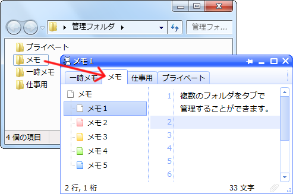

これはメモを管理するためのソフトです。
| ソフト名 | CatMemoNote |
|---|---|
| バージョン | 2.2 |
| 動作確認OS | Windows 8.1/7 |
| 開発環境 | Windows 7, Visual C++ |
| ランタイム | 特に必要ありません |
| ソフト種別 | フリーソフトウェア |
| 著作者 | Pyo (PapparaSoft) |
| 公開日 | 2008/06/01 |
| 更新日 | 2014/08/30 |
| Webサイト | http://www.cc9.ne.jp/~pappara/ |
| 連絡先 | tenku.ginga@gmail.com |
特別なインストール作業はありません。任意のフォルダに解凍して使用できます。「CatMemoNote.exe」の実行ファイルから起動できます。
解凍後のフォルダ移動やUSBメモリなどに入れて使用することも可能です。
レジストリは使用していませんのでフォルダごとごみ箱に入れてください。作成したメモは初期状態では「メモ」フォルダにテキストファイルとして保存されています。
システムの変更により今までなかった不具合が発生することもありえます。 万一のデータ消失に備えバックアップをとってから移行作業を行うことをおすすめします。
解凍した新しいバージョンのフォルダを、旧バージョンのフォルダへすべて上書きで大丈夫です。
※テーマなどをカスタマイズされている場合は上書きにご注意ください。
実行ファイル「CatMemoNote.exe」の上書きで大丈夫です。
実行ファイル「CatMemoNote.exe」の上書きで大丈夫です。
実行ファイル「CatMemoNote.exe」の上書きで大丈夫です。
「CatMemoNote.exe」を起動すると次のようなウィンドウが現れます。通常のウィンドウ操作とほぼ同じように操作できます。左側がメモの一覧で、右側がメモを編集するテキストエディタになっています。
アプリケーションの操作は、タイトルバーやタブ、メモ一覧、テキスト編集エリア部分などそれぞれの場所を右クリックして表示されるメニューから行えます。
タイトルバーのボタンは右から終了ボタン、最大化ボタン、最小化ボタン、最前面ボタンの4つが表示されています。最前面ボタンは画面を常に手前に表示するかを切り替えるボタンです。 タブの横にある検索ボックスから編集中のメモ内の文字を検索できます。ウィンドウの下部分のステータスバーには、編集中のメモの文字数などが表示されます。
メモ一覧の右クリックメニューや空白部分のダブルクリックでメモを作成することができます。メモをマウスでドラッグして順番を入れ替えたり、ツリー状に表示したりすることができます。
タスクトレイのアイコンをクリックすると、ウィンドウの表示/非表示を切り替えることができます。
終了するときは通常のウィンドウと同じように右上の×ボタンから終了できます。編集したメモは自動的に保存されます。
実行ファイルを起動すると管理フォルダ（初期状態では「メモ」フォルダ）の中のテキストファイルを検索してメモ一覧に表示します。
アプリケーションによって作成されたメモや編集したメモは自動的にテキストファイルとして管理フォルダへ保存されます。具体的なテキストファイル上書きのタイミングは以下です。
Ctrl+Sなどに割り振られているショートカットキーでも上書き保存が可能です。 テキストが変更されていない場合には上書き保存は行わないようになっています。
アプリケーションを終了するときにソフト全体の設定が保存される「system.ini」が作成されます。「system.ini」は定期的に「system_backup.ini」へバックアップされます。 オプション画面からキーワードを変更すると「keyword.ini」が作成されます。 これらの拡張子が「.ini」のファイルは削除してもメモ本文には影響はありませんが、それまでの設定は初期化されます。
メモ（テキストファイル）やタブ（管理フォルダ）を削除するとWindowsのごみ箱に入ります。
このソフトではメモ（テキストファイル）の保存や参照を行うフォルダを「管理フォルダ」と呼んでいます。 初期状態では実行ファイルと同じ場所にある「メモ」フォルダが管理フォルダに設定されています。
管理フォルダは画面上部のタブに一覧表示されます。タブの右クリックメニューや空白部分のダブルクリックでタブ（管理フォルダ）を作成できます。 初期状態ではタブを新しく作成すると実行ファイルと同じフォルダに管理フォルダが作成されます。オプション画面の「タブ」の「保存先フォルダ」から保存先を変更することもできます。
また、図のようにフォルダをドラッグ＆ドロップしてタブに登録することができます。
フォルダ内にある拡張子が「.txt」のテキストファイルをメモとして認識し、メモ一覧に表示します。（※その他のファイルやサブフォルダの中のファイルは表示されません。）
このソフトでは次の種類のファイルに設定を保存します。
ソフト全体の設定を保存しておくためのファイルです。 アプリケーション終了時に実行ファイルと同じフォルダに自動的に作成され、起動時に読み込まれます。 このファイルには、タブやメモの順番や各メモのフォント情報などが記録されていますので定期的にバックアップすることをおすすめします。 （初期状態では「system_backup.ini」という名前で1週間経過ごとにバックアップが自動的に作成されるようになっています。）
詳細については以下をご覧ください。
キーワード定義ファイルはテキストエディタのキーワード色分けを定義するためのファイルです。 オプション画面からキーワードを変更するとキーワード定義ファイル「keyword.ini」が作成されます。 ファイルの書式は以下のようになります。
☆
★
○
<
>
#
キーワードは一行ずつ指定されます。各キーワードの長さが63文字を超える場合は63文字以内に収めて読み込まれます。 空行はキーワードグループの区切りになっています。
初期設定では以下のショートカットキーが定義されています。
| 種類 | 操作 | ショートカットキー |
|---|---|---|
| ウィンドウ操作 | [ウィンドウ] 終了 | Alt + F4 |
| [ウィンドウ] 最大化 | F11 | |
| [ウィンドウ] 最小化 | F12 | |
| [ウィンドウ] 最前面表示 | Ctrl + T | |
| [ウィンドウ] 半透明化 | Alt + Q | |
| [ウィンドウ] シェード | Alt + W | |
| [ウィンドウ] リサイズ | Alt + R | |
| [ウィンドウ] 自動的に隠す | ||
| [ウィンドウ] メモ一覧表示 | Alt + M | |
| [ウィンドウ] タブ表示 | Alt + T | |
| [ウィンドウ] ステータスバー表示 | Alt + S | |
| [ウィンドウ] フォーカス移動 | Ctrl + Tab | |
| [ウィンドウ] タスク表示切り替え | Ctrl + Shift + T | |
| [ウィンドウ] オプション | Ctrl + O | |
| メニュー表示 | [メニュー] タイトルバーメニュー | Alt + Space |
| [メニュー] メモ一覧メニュー | ||
| [メニュー] タブメニュー | ||
| [メニュー] 検索メニュー | ||
| [メニュー] メモ選択 | Alt + D | |
| [メニュー] タブ選択 | Alt + F | |
| [メニュー] 定型文 | Alt + I | |
| [メニュー] ツール | Alt + G | |
| [メニュー] よく使うフォント | ||
| メモ操作 | [メモ] 前に追加 | Ctrl + N |
| [メモ] 後に追加 | ||
| [メモ] 下の階層に追加 | ||
| [メモ] リスト先頭に追加 | ||
| [メモ] リスト末尾に追加 | ||
| [メモ] 名前の変更 | F2 | |
| [メモ] 削除 | Ctrl + Delete | |
| [メモ] 前のメモ | Ctrl + ↑ | |
| [メモ] 次のメモ | Ctrl + ↓ | |
| [メモ] 上にスクロール | ||
| [メモ] 下にスクロール | ||
| [メモ] １番目のメモを開く | Ctrl + 1 | |
| [メモ] ２番目のメモを開く | Ctrl + 2 | |
| [メモ] ３番目のメモを開く | Ctrl + 3 | |
| [メモ] ４番目のメモを開く | Ctrl + 4 | |
| [メモ] ５番目のメモを開く | Ctrl + 5 | |
| [メモ] ６番目のメモを開く | Ctrl + 6 | |
| [メモ] ７番目のメモを開く | Ctrl + 7 | |
| [メモ] ８番目のメモを開く | Ctrl + 8 | |
| [メモ] ９番目のメモを開く | Ctrl + 9 | |
| [メモ] １０番目のメモを開く | Ctrl + 0 | |
| [メモ] アイコン１に変更 | Alt + 1 | |
| [メモ] アイコン２に変更 | Alt + 2 | |
| [メモ] アイコン３に変更 | Alt + 3 | |
| [メモ] アイコン４に変更 | Alt + 4 | |
| [メモ] アイコン５に変更 | Alt + 5 | |
| [メモ] アイコン切り替え↑ | ||
| [メモ] アイコン切り替え↓ | ||
| [メモ] 上に移動 | Alt + ↑ | |
| [メモ] 下に移動 | Alt + ↓ | |
| [メモ] 左に移動 | Alt + ← | |
| [メモ] 右に移動 | Alt + → | |
| [メモ] ツリーの開閉 | Alt + Num + | |
| [メモ] すべてのツリーを開く | Alt + Num * | |
| [メモ] すべてのツリーを閉じる | Alt + Num / | |
| [メモ] 編集ロック | Ctrl + Shift + L | |
| [メモ] パスワード設定 | Ctrl + P | |
| [メモ] 結合 | Ctrl + Shift + J | |
| [メモ] 一行目をメモ名に設定 | Ctrl + L | |
| [メモ] 選択テキストをメモ名に設定 | Ctrl + K | |
| [メモ] 現在メモの上書き保存 | Ctrl + S | |
| [メモ] メモ一覧更新 | F5 | |
| [メモ] 名前をコピー | Alt + , | |
| [メモ] パスをコピー | Alt + . | |
| [メモ] プロパティ | Ctrl + Enter | |
| [メモ] クリップON/OFF | ||
| タブ操作 | [タブ] 新規タブ作成 | Ctrl + Shift + N |
| [タブ] 名前の変更 | Ctrl + F2 | |
| [タブ] 削除 | Ctrl + Shift + Delete | |
| [タブ] 前のタブ | Ctrl + ← | |
| [タブ] 次のタブ | Ctrl + → | |
| [タブ] 左に移動 | Ctrl + Alt + ← | |
| [タブ] 右に移動 | Ctrl + Alt + → | |
| [タブ] 左にスクロール | ||
| [タブ] 右にスクロール | ||
| [タブ] １番目のタブを開く | Ctrl + Shift + 1 | |
| [タブ] ２番目のタブを開く | Ctrl + Shift + 2 | |
| [タブ] ３番目のタブを開く | Ctrl + Shift + 3 | |
| [タブ] ４番目のタブを開く | Ctrl + Shift + 4 | |
| [タブ] ５番目のタブを開く | Ctrl + Shift + 5 | |
| [タブ] ６番目のタブを開く | Ctrl + Shift + 6 | |
| [タブ] ７番目のタブを開く | Ctrl + Shift + 7 | |
| [タブ] ８番目のタブを開く | Ctrl + Shift + 8 | |
| [タブ] ９番目のタブを開く | Ctrl + Shift + 9 | |
| [タブ] １０番目のタブを開く | Ctrl + Shift + 0 | |
| [タブ] 選択テキストをタブ名に設定 | Ctrl + Shift + K | |
| [タブ] 名前をコピー | Ctrl + Alt + , | |
| [タブ] パスをコピー | Ctrl + Alt + . | |
| [タブ] タブを登録 | ||
| [タブ] タブを閉じる | ||
| [タブ] パスを変更 | Ctrl + Shift + \ | |
| [タブ] 保存フォルダを開く | Ctrl + \ | |
| [タブ] すべてのタブを閉じる | ||
| [タブ] 左のタブを閉じる | ||
| [タブ] 右のタブを閉じる | ||
| テキスト編集 | [編集] 元に戻す | Ctrl + Z |
| [編集] やり直す | Ctrl + Y | |
| [編集] 切り取り | Ctrl + X | |
| [編集] コピー | Ctrl + C | |
| [編集] 貼り付け | Ctrl + V | |
| [編集] 削除 | Delete | |
| [編集] すべて選択 | Ctrl + A | |
| [編集] 行の先頭へ移動 | Home | |
| [編集] 行の末尾へ移動 | End | |
| [編集] １ページ上へ移動 | PageUp | |
| [編集] １ページ下へ移動 | PageDown | |
| [編集] テキストの先頭へ移動 | Ctrl + Home | |
| [編集] テキストの末尾へ移動 | Ctrl + End | |
| [編集] 単語の先頭へ移動 | ||
| [編集] 単語の末尾へ移動 | ||
| [編集] 単語の先頭まで削除 | ||
| [編集] 単語の末尾まで削除 | ||
| [編集] 上にスクロール | ||
| [編集] 下にスクロール | ||
| [編集] チェックリスト | Ctrl + Space | |
| テキスト変換 | [変換] 大文字/小文字の反転 | F6 |
| [変換] 小文字 | F7 | |
| [変換] 大文字 | F8 | |
| [変換] ひらがな | ||
| [変換] カタカナ | ||
| [変換] 半角 | ||
| [変換] 全角 | ||
| [変換] タブをスペースに変換 | Ctrl + F7 | |
| [変換] スペースをタブに変換 | Ctrl + F8 | |
| [変換] タブ揃え | F9 | |
| [変換] インデント | Ctrl + ] | |
| [変換] アンインデント | Ctrl + [ | |
| [変換] 行の昇順ソート | Ctrl + Shift + A | |
| [変換] 行の降順ソート | Ctrl + Shift + D | |
| [変換] 行の数値昇順ソート | Ctrl + Shift + Alt + A | |
| [変換] 行の数値降順ソート | Ctrl + Shift + Alt + D | |
| [変換] 行のシャッフル | ||
| [変換] 行の逆並べ | ||
| [変換] 連続する重複行の削除 | Ctrl + Alt + U | |
| [変換] 重複行の削除 | Ctrl + Shift + U | |
| [変換] 重複行のカウント | Ctrl + Shift + Alt + U | |
| [変換] 数式計算 | F10 | |
| [変換] 合計 | Ctrl + F10 | |
| [変換] 計算結果の合計 | Ctrl + Shift + F10 | |
| 書式変更 | [書式] フォント変更 | Ctrl + @ |
| [書式] 文字サイズ＋ | Ctrl + + | |
| [書式] 文字サイズ－ | Ctrl + - | |
| [書式] 行間＋ | Ctrl + Shift + + | |
| [書式] 行間－ | Ctrl + Shift + - | |
| [書式] 折り返し切り替え | Ctrl + U | |
| [書式] 縦書き | Ctrl + I | |
| [書式] タブ幅＋ | Shift + Num + | |
| [書式] タブ幅－ | Shift + Num - | |
| [書式] ソフトタブ | ||
| [書式] オートインデント | ||
| [書式] 行番号の表示 | Ctrl + : | |
| [書式] ページ番号の表示 | Ctrl + Shift + : | |
| [書式] 空白の表示 | Ctrl + ; | |
| [書式] 改行の表示 | Ctrl + Shift + ; | |
| [書式] ガイドラインの表示 | ||
| [書式] 壁紙切り替え | Ctrl + B | |
| 検索と置換 | [検索] 検索 | Ctrl + F |
| [検索] 前へ検索 | Shift + F3 | |
| [検索] 次へ検索 | F3 | |
| [検索] 選択テキストを前へ検索 | Ctrl + Shift + Alt + F | |
| [検索] 選択テキストを次へ検索 | Ctrl + Shift + F | |
| [検索] 置換 | Ctrl + R | |
| [検索] 全検索ウィンドウ表示 | Ctrl + G | |
| [検索] 指定行へ移動 | Ctrl + J |
テキスト編集エリアにキーボードフォーカスがある場合は上記のショートカットキーに加えて次のキー操作が可能です。
| 種類 | 操作 | キー |
|---|---|---|
| テキスト編集 | 切り取り（非選択状態で行切り取り） | Ctrl + X, Shift + Delete |
| コピー（非選択状態で行コピー） | Ctrl + C, Ctrl + Insert | |
| 貼り付け | Ctrl + V, Shift + Insert | |
| すべて選択 | Ctrl + A | |
| 元に戻す | Ctrl + Z | |
| やり直す | Ctrl + Y, Ctrl + Shift + Z | |
| 行の先頭へ移動 | Home | |
| 行の末尾へ移動 | End | |
| １ページ上へ移動 | PageUp | |
| １ページ下へ移動 | PageDown | |
| テキストの先頭へ移動 | Ctrl + Home | |
| テキストの末尾へ移動 | Ctrl + End | |
| 単語の先頭へ移動 | Ctrl + ← | |
| 単語の末尾へ移動 | Ctrl + → | |
| 単語の先頭まで削除 | Ctrl + BackSpace | |
| 単語の末尾まで削除 | Ctrl + Delete | |
| オートインデント実行（または回避） | Shift + Enter | |
| 数式計算（数式の「=」がある場合） | Enter | |
| 数式計算の回避 | Shift + Enter | |
| 再変換 | 変換 | |
| メニュー表示 | アプリケーションキー（Shift + F10） |
メモ一覧にキーボードフォーカスがある場合は次のキー操作が可能です。（初期状態ではメモ一覧へのフォーカス移動が無効になっています。フォーカス移動を有効にするにはオプション画面の「その他」タブの「メモ一覧のキーボードフォーカスを有効にする」から設定できます。）
| 種類 | 操作 | キー |
|---|---|---|
| メモ操作 | メモを作成 | Insert |
| 後に追加 | Enter | |
| メモの削除 | Delete | |
| 前のメモ | ↑ | |
| 次のメモ | ↓ | |
| リスト先頭のメモを開く | Home | |
| リスト末尾のメモを開く | End | |
| ツリー開閉 | ←, → | |
| すべて選択 | Ctrl + A | |
| フォーカス移動 | Tab | |
| メニュー表示 | アプリケーションキー（Shift + F10） |
検索ボックスにキーボードフォーカスがある場合は次のキー操作が可能です。
| 操作 | キー |
|---|---|
| 前の検索履歴 | ↑ |
| 次の検索履歴 | ↓ |
| 検索実行 | Enter |
| フォーカス移動 | Tab |
| メニュー表示 | アプリケーションキー（Shift + F10） |
ホットキーはCatMemoNoteのウィンドウが隠れている場合やアクティブになっていない状態でも有効なキーボード操作です。ショートカットキーよりも優先されて実行されます。初期状態では次のホットキーが設定されています。
| 処理内容 | ホットキー |
|---|---|
| ウィンドウ表示/非表示 | Ctrl + Caps Lock |
| メモを作成 | Ctrl × 2回 |
| クリップボードを現在メモに貼り付け | Ctrl + F12 |
| クリップボードを新規メモに貼り付け | Ctrl + Shift + F12 |
| オートクリップON/OFF | Ctrl + Shift + Alt + F12 |
| ツールメニュー | Ctrl + Shift + 無変換 |
ホットキーはオプション画面の「操作」タブから変更することができます。
Unicode文字の「☑」と「☐」を使ってチェックリストを作成できます。
☑リスト１
☑リスト２
☐リスト３
☐リスト４
チェックマークのクリックや「Ctrl + Space」に割り当てられているショートカットキーでチェック状態を切り替えることができます。複数行を選択してまとめてチェック状態を変更することも可能です。
タブまたは2つ以上の半角スペースで区切られた文字列を列の項目と見なし、タブを挿入して整えます。
にんじん 198円
玉ねぎ 250円
キャベツ 150円
ヨーグルト 130円
食パン 158円
↓
にんじん 198円
玉ねぎ 250円
キャベツ 150円
ヨーグルト 130円
食パン 158円
テキストが選択されていない場合はカーソルがある一行を対象として実行されます。
行の文字列の各文字コード（Unicode）の大小により並び替えを行います。
「行の数値昇順ソート」と「行の数値降順ソート」では、文字列を数値と見なす並び替えができます。（こちらのソート方法では半角英字の大文字と小文字の区別はしません。）
行をランダムに並べ替えます。
行を行単位で逆順に並べ替えます。
隣接した同じ行を一行にまとめます。
同じ行を削除します。
りんご
みかん
りんご
メロン
グレープ
メロン
みかん
りんご
↓
りんご
みかん
メロン
グレープ
「連続する重複行の削除」と少し異なり、ソートされていなくても同じ行は削除されます。
同じ行を削除します。さらに、行頭に重複した数を挿入します。
りんご
みかん
りんご
メロン
グレープ
メロン
みかん
りんご
↓
3 りんご
2 みかん
2 メロン
1 グレープ
数値のあとはタブがひとつ付きます。
イコール「=」で終わる数式を入力してEnterキーを押すと自動的に式の解析が始まり計算されます。
式を入力してEnterキーまたは右クリックメニューの「数式計算」を実行し、出力された答えにさらに計算式を追加して計算することができます。
1+2+3=
1+2+3=6
1+2+3=6*10=
1+2+3=6*10=60
1+2+3=6*10=60/5=
1+2+3=6*10=60/5=12
次のような複数行の式を選択して一度に計算させることも可能です。
(1 + 2) * (3 + 4) =
5 * (2 + 4) / (3 * (7 - (+3))) =
500 * 1.08
1 / 3
３６÷（４＋８）×８＝
りんご：150円×5個＝
上記テキストを選択してエディタの右クリックメニューから「数式計算」を行うと以下の結果になります。
(1 + 2) * (3 + 4) =21
5 * (2 + 4) / (3 * (7 - (+3))) =2.5
500 * 1.08=540
1 / 3=0.33333333333333331
３６÷（４＋８）×８＝24
りんご：150円×5個＝750
式にイコール「=」がなくても計算されて答えが入力されます。
次のような数式は正しく計算できません。
(3+1)/2)= ※括弧が対応していない場合
10/0= ※0で除算したときはエラーになります
10*[3*{(10-4)/2}]= ※括弧は ( ) のみ使えます
三×四＝ ※漢数字は認識しません
99999999999999999999999999999999999+1= ※桁数が多すぎる場合
x = 10; y = 20; x * y = ※変数には対応していません
| 演算子 | 説明 | 計算例 | |
|---|---|---|---|
| 符号 | + | 正数 | +2 = 2 |
| - | 負数 | -(2 + 3) = -5 | |
| 算術演算 | + | 加算（足し算の和を求める） | 1 + 2 = 3 |
| - | 減算（引き算の差を求める） | 5 - 3 = 2 | |
| * | 乗算（掛け算の積を求める） | 3 * 2 = 6 | |
| / | 除算（割り算の商を求める） | 7 / 2 = 3.5 | |
| % | 剰余（割り算の余りを求める） | 7 % 3 = 1 | |
| ^ | 累乗（べき乗） | 2 ^ 3 = 8 | |
| ! | 階乗 | 5 ! = 120 | |
演算子には優先順位があり、優先度の高い演算子の式が先に計算されます。同じ優先度の場合は左から順に計算されます。括弧 ( ) を使って計算の順序を指定することができます。
| 優先度 | 演算子 | 説明 |
|---|---|---|
| 1（高い） | + - ! | +-符号、階乗 |
| 2 | * / % ^ | 乗算、除算、剰余、累乗 |
| 3（低い） | + - | 加算、減算 |
| 関数 | 説明 | 計算例 | |
|---|---|---|---|
| 算術関数 | ABS(数値) | 数値の絶対値を返す | ABS(-5)=5 |
| SQRT(数値) | 正の平方根を返す | SQRT(2)=1.414213562373095 | |
| MOD(数値, 数値) | 剰余（演算子「%」と同じ） | MOD(9,4)=1 | |
| POW(数値, 指数) | 累乗（演算子「^」と同じ） | POW(2,3)=8 | |
| 三角関数 | SIN(ラジアン) | 正弦（サイン） | SIN(30*PI/180)=0.49999999999999994 |
| COS(ラジアン) | 余弦（コサイン） | COS(30*PI/180)=0.86602540378443871 | |
| TAN(ラジアン) | 正接（タンジェント） | TAN(30*PI/180)=0.57735026918962573 | |
| 定数 | PI | 円周率（π）を返す | PI=3.1415926535897931 |
数値の先頭にプレフィックス（接頭辞や接頭子と呼ばれます）を付けることで2進数・8進数・16進数を表現できます。
| 記数法 | プレフィックス | 例 | 10進数の値 |
|---|---|---|---|
| 2進 | 0b または 0B | 0b00000101 | 5 |
| 8進 | 0o または 0O | 0o052 | 42 |
| 16進 | 0x または 0X | 0xa2fd | 41725 |
次のような計算ができます。
0b1010 =
0o12 =
0xa =
0xbe + 0x90 =
0x3A.C =
0x7e * (0b0101.1 - -0o3.4) =
計算結果は次のようになります。
0b1010 =10
0o12 =10
0xa =10
0xbe + 0x90 =334
0x3A.C =58.75
0x7e * (0b0101.1 - -0o3.4) =1134
次のような数値を合計します。
11 137 41 19
48 49 21 -30
68 -97 127.5 5
72 48 117 -13.25
結果は次の行に入力されます。
11 137 41 19
48 49 21 -30
68 -97 127.5 5
72 48 117 -13.25
合計：623.25
各行の計算式を解いてその合計を求めます。こちらは「合計」機能と異なり行単位で合計します。
| 変換前 | 変換後 |
|---|---|
|
にんじん：198円 玉ねぎ：250円 キャベツ：150円×2 ヨーグルト：130円 食パン：158円 |
にんじん：198円 玉ねぎ：250円 キャベツ：150円×2 ヨーグルト：130円 食パン：158円 合計：1036 |
|
100 + 200 + 300 = 5 * (2 + 6) = 2 / 4 = 0xfe5a - 0xffb6 = sqrt(7 - (10 - 7)) * 3 = |
100 + 200 + 300 =600 5 * (2 + 6) =40 2 / 4 =0.5 0xfe5a - 0xffb6 =-348 sqrt(7 - (10 - 7)) * 3 =6 合計：298.5 |
正規表現は文字列をパターン化して表現する手法です。CatMemoNoteでは以下のメタ文字を使えます。
| メタ文字 | 説明 | 備考・使用例 |
|---|---|---|
| 行頭 | ||
| 行末 | ||
| 改行を除く任意の1文字（ワイルドカード） | ||
| 直前のパターンの0回以上の繰り返し | ||
| 直前のパターンの1回以上の繰り返し | ||
| 直前のパターンの0回または1回の繰り返し | ||
| n | 直前のパターンのn回の繰り返し | n は数字です。例えば a{3} で aaa にマッチ |
| n | 直前のパターンのn回以上の繰り返し | b{2,} で bb bbb bbb bbbb bbbbb… にマッチ |
| nm | 直前のパターンのn回からm回の繰り返し | c{1,3} で c cc ccc にマッチ |
| 直前のパターンの0回以上の最短一致 | ||
| 直前のパターンの1回以上の最短一致 | ||
| 直前のパターンの0回または1回の最短一致 | ||
| n | 直前のパターンのn回の最短一致 | |
| n | 直前のパターンのn回以上の最短一致 | |
| nm | 直前のパターンのn回からm回の最短一致 | |
| グループ化 | パターンをまとめます。さらに一致した文字列を記憶します | |
| ～ | 後方参照 | ( ) で記憶した文字列を取り出します（※置換でのみ使用可） |
| 選択一致 | あ|い|う で あ、い、う にマッチ | |
| [ ]の中の任意の1文字（キャラクタクラス） | [a-zA-Z] でa～z、A～Zにマッチ | |
| [^ ]の中以外の任意の1文字 | [^a-zA-Z] でアルファベット以外にマッチ | |
| 範囲指定 | [ ] の中で使います。[a-f] [あ-お] など | |
| 改行 | \x0c\x0d|[\x0c\x0d] と同じ | |
| タブ | \x09と同じ（水平タブ） | |
| 空白 | [\t ] と同じ（タブと半角/全角スペース） | |
| 空白以外 | [^\t ] と同じ（タブと半角/全角スペース以外） | |
| 数字 | [0-9] と同じ（半角の数字にマッチ） | |
| 数字以外 | [^0-9] と同じ | |
| 英数アンダーバー | [a-zA-Z0-9_] と同じ | |
| 英数アンダーバー以外 | [^a-zA-Z0-9_] と同じ | |
| と16進数 | 文字コード指定（Unicode） | \x20 \x5b57 \xFF21 など（1～4桁以内） |
| 直後のメタ文字をエスケープ | 例えば \. で . を通常の文字として扱います |
置換文字列に使えるメタ文字は \1～\9 \n \t \ です。
| 操作 | 検索文字列 | 置換文字列 | |
|---|---|---|---|
| 検索 | OR検索 | 文字列1|文字列2 | |
| 任意の文字列に囲まれた文字列 | 文字列1.+?文字列2 | ||
| URL※ | https?://[\w\d/%#\$&\?\(\)~\.=\+\-]+ | ||
| メールアドレス※ | [\w\.\-]+@[\w\.\-]+ | ||
| 電話番号※ | \d{2,4}-\d{2,4}-\d{4} | ||
| 日付※ | \d{4}[/\.年]\d{1,2}[/\.月]\d{1,2}日 | ||
| 複数行の検索 | 1行目\n2行目 | ||
| ひらがな | [ぁ-ん] | ||
| カタカナ | [ァ-ヴー] | ||
| 半角ｶﾀｶﾅ | [｡-ﾟ] | ||
| 全角の英数とアンダーバー | [ａ-ｂＡ-Ｂ０-９＿] | ||
| 漢字※ | [\x3400-\x9FFF\xF900-\xFAFF] | ||
| カラーコード（#FFFFFFなど） | #[0-9a-fA-F]{3,6} | ||
| 未チェックのチェックリスト行 | ^\s*?☐.* | ||
| 置換 | 複数の文字列を一度に置換 | 置き換え|置換え|置きかえ | 置換 |
| 文字列の入れ替え | (あ)(い)(う)(え)(お) | \5\4\3\2\1 | |
| 「…」を『…』に変換 | 「(.+?)」 | 『\1』 | |
| 改行削除（複数行を1行にする） | \n+ | ||
| 空行削除 | ^\n+ | ||
| 行頭空白削除 | ^\s+ | ||
| 行末空白削除 | \s+$ | ||
| 連続する空行を1行にまとめる | ^\n+ | \n | |
| 連続するタブを1つにまとめる | \t+ | \t | |
| カンマ「,」をタブに置換 | , | \t | |
| 行頭文字列追加 | ^ | （追加したい文字） | |
| 行末文字列追加 | $ | （追加したい文字） | |
| ある文字列を含む行を削除 | ^.*文字列.*[\n]+ | ||
| \9,999→9,999円 | \\([\d]{1,3}[\,]*)+ | \1円 | |
| HTMLタグを除去 | <.*?> | ||
| yyyy年mm月dd日→yyyy/mm/dd※ | (\d{4})年(\d{2})月(\d{2})日 | \1/\2/\3 | |
日時や署名などのよく使う定型文を登録しておくことができます。編集エリアの右クリックメニューから定型文を編集中のメモに挿入することができます。
定型文には以下の$からはじまる文字（特殊記号）を指定できます。
日時の変換例は「2014年5月14日 午後6時50分3秒」を例にしています。
| 種類 | 特殊記号 | 変換後の値 | 変換例・備考 |
|---|---|---|---|
| フォーマット済み日時 | $1 | 日付 | 2014/05/14 |
| $2 | 時刻 | 18:50:03 | |
| $3 | 日付と時刻 | 2014/05/14 18:50:03 | |
| $4 | 年月日 | 2014年5月14日 | |
| $5 | 年月日と曜日 | 2014年5月14日（水） | |
| $6 | 年月日と時刻 | 2014年5月14日 午後6時50分3秒 | |
| $7 | 和暦 | 平成26年5月14日 | |
| $8 | 和暦（アルファベットと数字） | H26.5.14 | |
| $9 | 英語表記 | May 14 2014 | |
| 日付 | $Y | 年 | 2014 |
| $y | 年（下2桁） | 14 | |
| $m | 月 | 5 | |
| $M | 月（2桁） | 05 | |
| $f | 月（英語3文字） | May | |
| $F | 月（英語） | May | |
| $d | 日 | 14 | |
| $D | 日（2桁） | 14 | |
| $w | 曜日（英語3文字） | Wed | |
| $W | 曜日（英語） | Wednesday | |
| $a | 曜日（日本語） | 水 | |
| $e | 和暦の元号（日本語） | 平成 | |
| $E | 和暦の元号（アルファベット） | H | |
| $j | 和暦の年 | 26 | |
| $J | 和暦の年（2桁） | 26 | |
| $A | 十二支 | 午 | |
| 時刻 | $g | 時（12時間制） | 6 |
| $G | 時（12時間制2桁） | 06 | |
| $h | 時（24時間制） | 18 | |
| $H | 時（24時間制2桁） | 18 | |
| $i | 分 | 50 | |
| $I | 分（2桁） | 50 | |
| $s | 秒 | 3 | |
| $S | 秒（2桁） | 03 | |
| $p | 午前/午後 | M | |
| $P | AM/PM | 午後 | |
| 編集情報 | $@ | 選択テキスト | （選択されていない場合は文字カーソル位置の単語です） |
| $L | １行目のテキスト | ||
| $_ | クリップボードのテキスト | ||
| $/ | 総行数 | 1 | |
| $, | 総文字数 | 0（改行はカウントしません） | |
| $B | 総文字数（全角） | 0（改行はカウントしません） | |
| $C | 総文字数（半角） | 0（改行はカウントしません） | |
| $. | 総バイト数 | 0 | |
| $= | カーソル行 | 1 | |
| $: | カーソル桁列 | 1 | |
| $| | カーソル位置 | 0（先頭からのバイト単位です） | |
| $l | 選択行数 | 0 | |
| $? | 選択文字数 | 0（改行はカウントしません） | |
| $b | 選択文字数（全角） | 0（改行はカウントしません） | |
| $c | 選択文字数（半角） | 0（改行はカウントしません） | |
| $[ | 選択開始位置 | 0（バイト単位です） | |
| $] | 選択終了位置 | 0（バイト単位です） | |
| $* | 選択バイト数 | 0 | |
| ファイル情報 | $x | メモの名前 | 新規メモ |
| $T | メモのファイル拡張子 | .txt | |
| $X | メモのファイルパス | C:\CatMemoNote\管理フォルダ\新規メモ.txt | |
| $z | メモのフォルダ名 | 管理フォルダ | |
| $Z | メモのフォルダパス | C:\CatMemoNote\管理フォルダ | |
| $+ | メモの作成日時 | 2014/05/14 18:46:51 | |
| $' | メモの更新日時 | 2014/05/14 18:47:19 | |
| $` | メモのアクセス日時 | 2014/05/14 18:46:51 | |
| $- | メモのファイルサイズ | 0（バイト単位です） | |
| $# | 実行ファイルのフォルダパス | C:\CatMemoNote | |
| $^ | 現在テーマフォルダ名 | CatMemoNote | |
| $~ | 現在テーマフォルダパス | C:\CatMemoNote\theme\CatMemoNote | |
| $% | 現在の背景画像ファイルパス | C:\CatMemoNote\theme\CatMemoNote\back.bmp | |
| その他 | $! | 変換後のカーソル位置 | （定型文挿入後この位置へ文字カーソルを移動します） |
| ${ | 変換後の選択開始位置 | （\}と組み合わせて使用します） | |
| $} | 変換後の選択終了位置 | （\{と組み合わせて使用します） | |
| $$ | $の文字 | $ | |
| $t | タブ文字 | ||
| $n | 改行 |
例えば定型文を「$Y/$M/$D」にすると「2014/05/14」と変換されて挿入されます。
特殊記号の「$!」または「${」、「$}」を使用しない場合は挿入テキストの末尾へ文字カーソルを移動します。
外部ツール実行機能ではプログラムやファイルをCatMemoNoteから起動させることができます。 外部ツールのコマンド（ファイルパスやURLなど）、パラメータ（コマンドライン引数）、作業フォルダ、それぞれに「定型文」と同じ特殊記号を指定できます。
以下は外部ツールの設定例です。
【Windowsの電卓を起動】
コマンド: calc
【選択テキストのファイルやURLを開く】
コマンド: $@
【選択テキストをGoogleを利用して検索】
コマンド: http://www.google.com/search?hl=ja&q=$@
その他のソフトでコピーされたテキストを自動的に編集中のメモに貼り付ける機能です。テキストをピックアップして後でまとめる時などに便利です。この機能は、メインメニューやステータスバーのクリップアイコンからON/OFFを切り替えることができます。
※「Ctrl + C」を押す時間が長いと2回貼り付けられてしまうことがありますのでご注意ください。
現在クリップボードにあるテキストをメモに貼り付けることができるホットキーがいくつか定義されています。一覧は「ホットキー」の項目をご覧ください。
メモ本文のURL、メールアドレス、ファイルパスをダブルクリック（またはシングルクリック）で開くことができます。
リンクをダブルクリックすると既定のWebブラウザを起動してURLにアクセスします。次の文字から始まるURLを認識します。
リンクをダブルクリックすると既定のメールソフトにメールアドレスを渡してメールソフトを起動します。次のようなメールアドレスを認識します。
リンクをダブルクリックするとファイルパスを関連付けられたアプリケーションで開きます。フォルダパスの場合はフォルダを開きます。相対パスの場合は管理フォルダがルートディレクトリになります。次のような文字から始まるファイルパスを認識します。
※Cドライブ以外も認識します。
「memo:」から始まるテキストはメモリンクとして認識されます。メモリンクは「memo:」以降の記述に従いメモやタブを開いたり、テキストの特定の位置へのカーソル移動ができます。 見出しへのリンクなど参照先として指定する場合などに利用できます。
| 記述例 | 動作 |
|---|---|
| memo:○○ | 「○○」メモを開く |
| memo:□□/ | 「□□」タブを開く |
| memo:□□/○○ | 「□□」タブの「○○」メモを開く |
| memo:□□\○○ | 「□□」タブの「○○」メモを開く |
| memo:#3 | 現在のタブの3番目のメモを開く |
| memo:#1/#3 | 1番目のタブの3番目のメモを開く |
| memo:[ABC] | 現在のメモの先頭から初めに見つかった「ABC」の位置へ移動 |
| memo:□□/○○[ABC] | 「□□」タブの「○○」メモの「ABC」の位置へ移動 |
| memo:□□/#3[ABC] | 「□□」タブの3番目メモの「ABC」の位置へ移動 |
| memo:○○[#10] | 「○○」メモの10行目へ移動 |
| memo:○○[#10,#5] | 「○○」メモの10行目5列へ移動 |
| memo:○○[#10,#5,#7] | 「○○」メモの10行目5列へ移動し7バイト目までテキスト選択 |
「/」または「\」で区切られた要素の数と、[ ] で囲った要素によりリンク先の解析が行われます。
リンク先を開く際に、リンク先がない場合や解析できない場合はなにもしません。
詳しい仕様については以下になります。
メモをパスワードで暗号化することができます。パスワードを知っている人だけ暗号化したファイルを開くことができます。そのため、パスワードは忘れないように管理をお願いします。
※暗号化は完全ではありませんので本当に重要なメモの管理には使用しないでください。
テーマは、アプリケーションの外観をカスタマイズするための機能です。ウィンドウ内の文字の大きさや配色などを変更することができます。テーマは普通のテキストファイルや画像ファイルで作成することが可能です。詳細については以下をご覧ください。
初期状態ではメモのテキストファイルは「UTF-8 BOM付き」で保存されます。テキストファイルは、次のいずれかの文字コードで保存されていれば自動的に判別して読み込めるようになっています。
※「UTF-8 BOM付き」、「UTF-16LE」、「UTF-16BE」以外で保存する場合は文字コードの自動判別に失敗し文字化けが発生することがあります。
初期状態では「CR + LF」で保存されます。改行コードは次の3つの種類に対応しています。クリップボードのテキストを貼り付けた時やメモを保存するときに自動的に指定した改行コードに統一されるようになっています。
マウスのドラッグ操作により以下のような操作が可能です。
| 操作 | 説明 | |
|---|---|---|
| メモ | 左ドラッグ | メモの移動 |
| 左ドラッグ + Ctrl | メモのコピー | |
| タブ | 左ドラッグ | タブの移動 |
| メモをタブへ | 左ドラッグ | 指定タブにメモを移動 |
| 左ドラッグ + Ctrl | 指定タブにメモをコピー | |
| フォルダをタブへ | 左ドラッグ | フォルダのタブ登録 |
| ファイルをメモ一覧へ | 左ドラッグ | テキストファイル(*.txt)： メモとして作成（元のファイルはなくなりません。） それ以外のファイル： なにもしない |
| ファイルをエディタへ | 左ドラッグ | 単一テキストファイル(*.txt)： ファイル内容をカーソル位置に貼り付け 単一画像ファイル(*.png/*.jpg/...)： エディタの背景画像を変更 それ以外のファイルや複数ファイル： フルパスをカーソル位置に貼り付け |
| 左ドラッグ + Ctrl | パスをカーソル位置に貼り付け | |
メモの移動やコピーは、ツリー構造で行われます。タブのコピーには対応していません。
複数のファイル・フォルダのドロップに対応しています。
プログラムの不備でメモ内容が消えてしまうなど不具合が発生するかもしれません。
メモのバックアップはこまめにとっておくことをおすすめします。
エディタ部分は「nEdit」をカスタマイズして組み込んでいます。「nEdit」は通常のエディットコントロールとメッセージに互換性があり拡張性が高いのが魅力です。 また、正規表現には「regex.c」のプログラムを使用させていだたきました。
nEdit , regex
Copyright (C) 1996-2014 by Nakashima Tomoaki. All rights reserved.
http://www.nakka.com/
その他、このソフトを作成するにあたり多くの書籍やインターネット上のドキュメントが参考になりました。 これらの優れたソフトウェアを公開してくださっている作者様、また掲示板などで情報提供をしてくださった皆様に厚くお礼申し上げます。
メモは普通のテキストファイルで保存されていますので可能です。CatMemoNoteの起動中にその他のソフトで編集することもできますが、ファイルの排他制御を行っていませんので一度ソフトを終了させたほうが安全です。このソフトではテキストに変更があった場合に上書き保存するようにしているため上書きされてしまう可能性があります。（オプション画面の「複数起動を許可する」にチェックを入れた場合でも同様の注意が必要です。）
「F5」キーなどでメモ一覧を更新すると同じ内容になります。フォルダ内容の変更の監視は行っていませんので、エクスプローラなどでフォルダ内のファイルを変更した場合は手動で更新を行ってください。
メモのデータはすべて管理フォルダ（初期状態では「メモ」フォルダ）にテキストファイルとして保存されていますのでフォルダごとコピーする方法が簡単です。バックアップから復旧させるにはその逆を行えば良いので手軽です。メモのツリー順番やアイコン設定などもバックアップする場合は、CatMemoNote本体のフォルダにある「system.ini」ファイルもメモのデータといっしょにバックアップを行ってください。ソフトのすべての設定は「system.ini」ファイルに保存されます。アプリケーションの突然の強制終了も起こりえますので、設定ファイルも定期的にバックアップすることをお勧めします。
初期設定ではメモを削除するとWindowsのごみ箱に入ります。そちらから削除したメモ（テキストファイル）を通常のファイル操作と同じように元に戻すことができます。「F5」キーなどでメモ一覧を更新すると元に戻したメモが再表示されます。タブも同様に削除されるとごみ箱に入ります。
このソフトでは、メモの保存や参照をするためのフォルダを一つ以上登録する必要があります。タブの右クリックメニューやタブの空白のダブルクリックでタブを作成することができます。詳細は「ディレクトリ構成」をご覧ください。